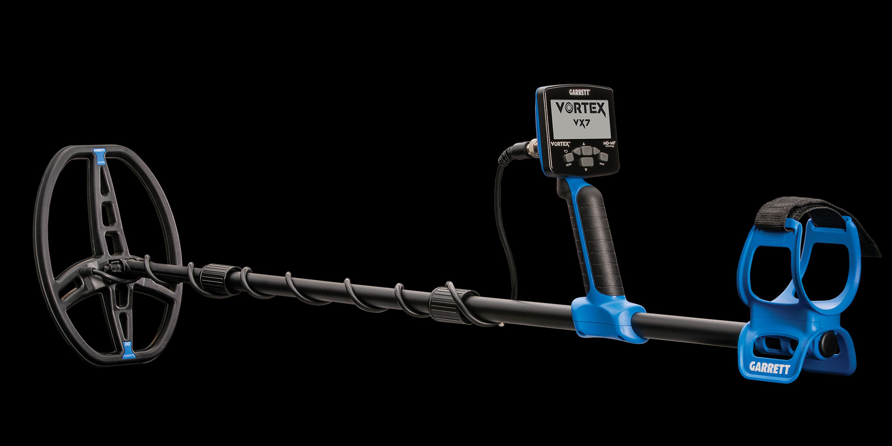
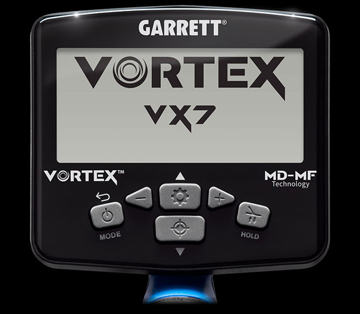
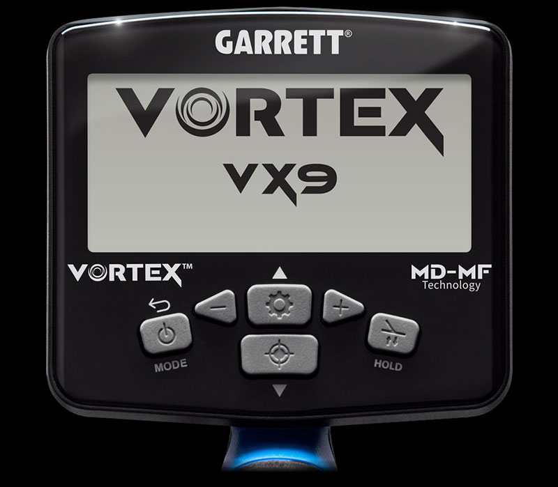

Ampliar





Novo
Multi-Flex™
Submersível
Garrett
Vortex
A nova geração de detectores multifrequência Garrett — totalmente submersível, software atualizável e wireless Z-Lynk integrado. Disponível nos modelos VX5, VX7 e VX9.
Tecnologia: Multi-Flex™ Multifrequência Simultânea
Submersão: Total até 3 metros (detector + bobina)
Wireless: Z-Lynk integrado
Atualizável: Via software (firmware upgrade)
Modelos: VX5 · VX7 · VX9
Consulte disponibilidade e preço